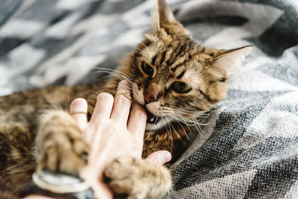

Как отучить кошку кусаться?
Как отучить кошку кусаться? Этим вопросом часто задаются хозяева усатых-полосатых, в чьих домах живут коты, подобранные с улицы, или в чьих домах живут вместе кошки и другие животные, или кошки и маленькие дети.
Почему кошка кусается?
Как всегда, начнем с начала, с причин. Что же заставляет кошку кусаться?
• Игра
Все высшее животные играют, так они обучаются владеть своим телом, контактировать с окружающим миром, соплеменниками и другими живыми существами.
В процессе игры с однопометниками и матерью, котенок учится контролировать укус, понимать, что является болезненным, а что нет. Если котенка рано разлучили с «семьей», он не будет знать как правильно обращаться со своей челюсть и неизбежно будет тренироваться на людях и других животных в новом доме.
Кроме того, не забывайте, что котята любят все пробовать на зуб, потому что еще не знаю, что съедобно, а что нет, а еще потому, что у них меняются зубы.
Кусать, играя, могут и взрослые кошки. Также они могут прихватить зубами во время неприятных процедур (расчесывания, мытья, ветеринарного осмотра и т.д.) – это совершенно нормально. Но правильно воспитанная кошка с уравновешенным характером никогда не прокусит вашу руку до крови.
Иногда кошки кусают или царапают спящих людей – например, ноги, шевелящиеся под одеялом. Это происходит потому, что кошка не осознает: ноги тоже часть вашего тела.
• Агрессия
Не стоит забывать, что в природе, дикие кошки – одни из самых агрессивных животных. Агрессия – защита мелкого хищника от более крупных собратьев, связываться с таким – себе дороже.
Агрессию кошка часто проявляет в целях самозащиты. Угрозой кошка может посчитать все, что угодно – вспышку фотоаппарата, громкий звук, запах лекарств, усиленные тисканья и т.д.
Агрессия может быть продиктована и болью, которую испытывает кошка. Чаще всего такая агрессия возникает, если вы прикасаетесь к больному месту.
Еще один вид агрессии – территориальный. Кошка не любит чужих на своей территории, она воспринимает их как конкурентов. Такая агрессия может быть обращена на других животных, детей или даже вновь прибывших взрослых.
Половая агрессия – чуть ли не самый распространенный вид кошачьей агрессии. Чаще всего кусаются и бросаются на хозяев окотившиеся кошки, защищающие потомство, а также коты в период «гона».
Перенесенная агрессия – самый сложный тип агрессии, связанный с прошлым опытом кошки. Часто встречается у животных, подобранных с улицы. Испытанный ранее негатив заставляет кошку вести себя агрессивно даже по отношению к тому, кто не сделал для нее ничего плохого.
Как отучить кошку кусаться?
• Обязательно кастрируйте животное, если оно не предназначено для племенного разведения.
• Не играйте с кошкой руками и ногами, если она пытается это сделать самостоятельно – переключайте ее внимание.
• Правильно знакомьте кошку с новыми людьми и животными в вашем доме.
• Проинструктируйте всех домочадцев по поводу правильного общения с кошкой, особое внимание уделите детям.
• Перекройте кошке доступ в спальню, если она склонна атаковать ваши ноги или тыкать лапой в лицо.
• Регулярно (не реже раза в год) показывайте кошку ветеринару, и обязательно посетите врача внеурочно при подозрении на болевой синдром.
• Применяйте специальные успокоительные средства после консультации с ветеринаром.
• Обратитесь к зоопсихологу, если ничто из перечисленного выше не помогло.
Кусаться для хищника – естественно, надо только приучить его к контролированию своих действий.